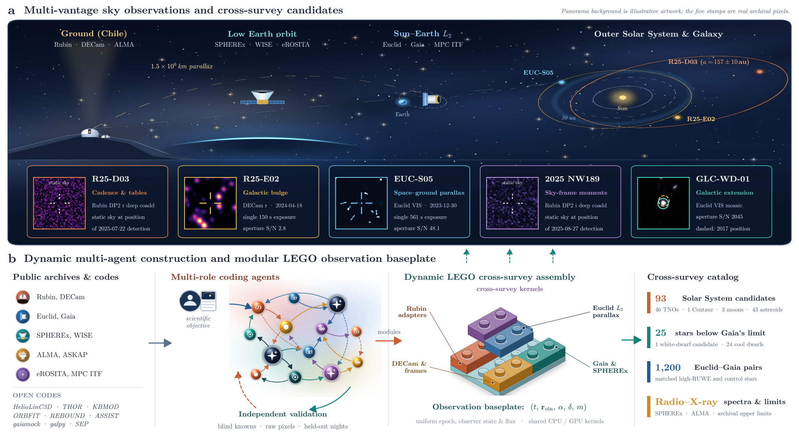
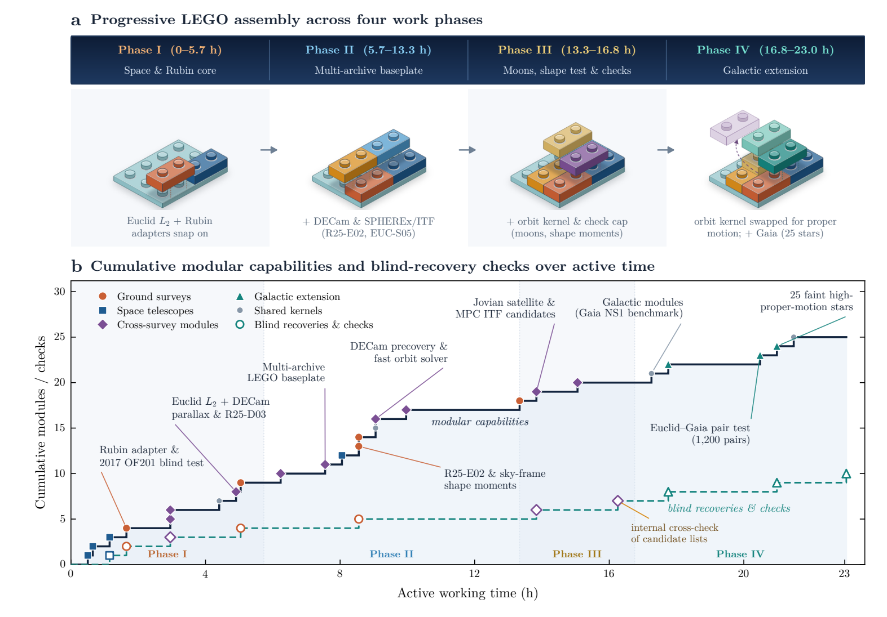
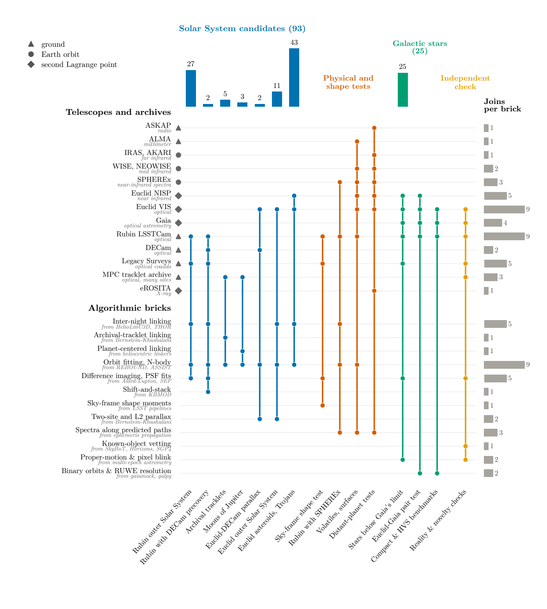
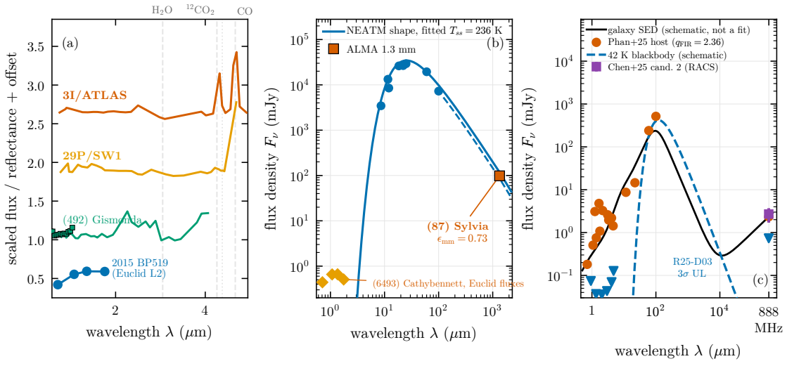
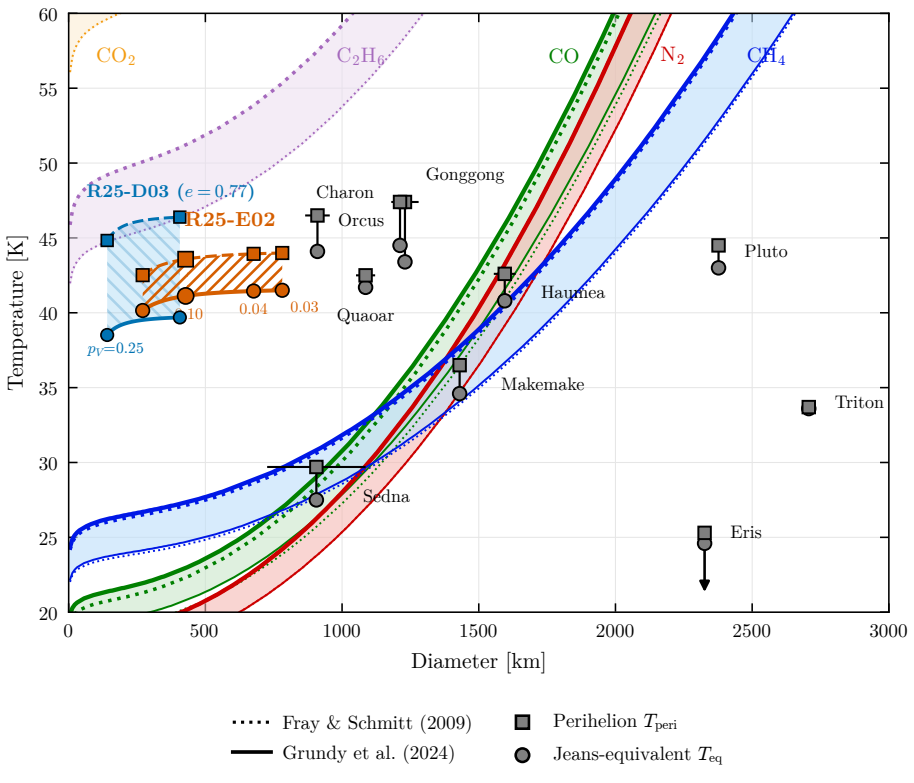
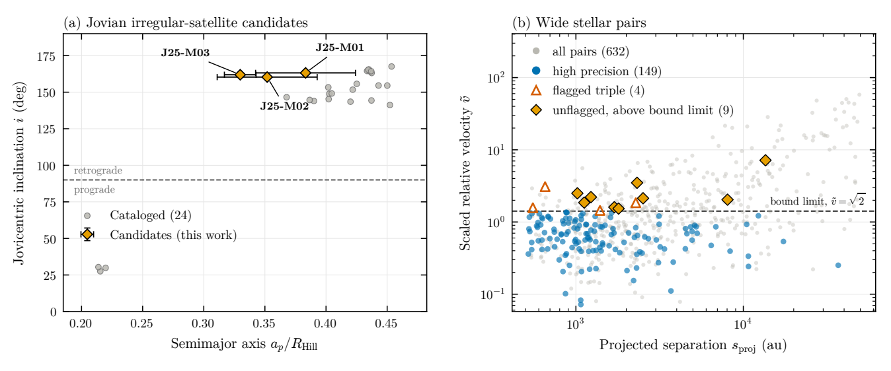
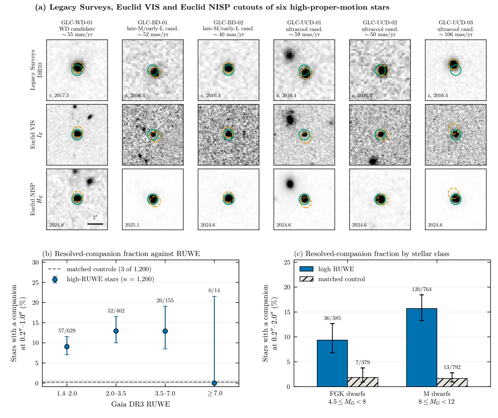
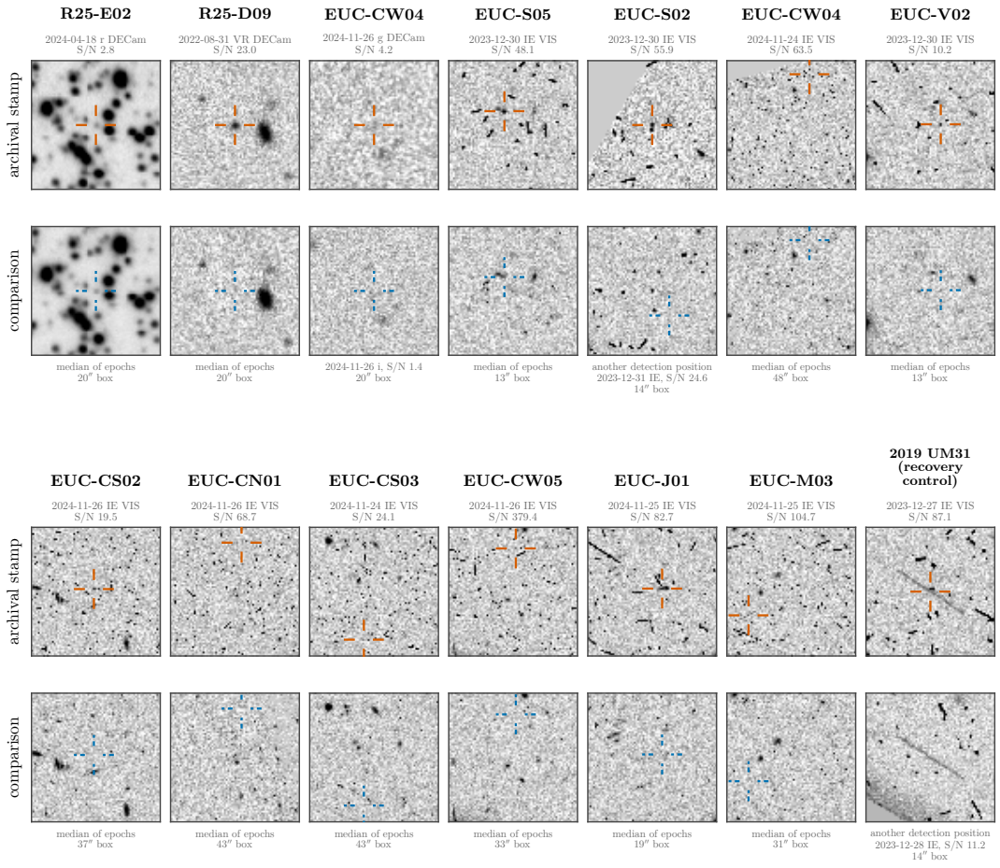

Introduction
Modern sky surveys release deep images and catalogs, yet each archive is processed in isolation by a pipeline built around one camera, one cadence, and one science goal. Every design choice in such a pipeline leaves a predictable blind spot. A distant outer-Solar-System body moves too little within a single night to form the tracklets that the linker of Vera C. Rubin Observatory expects. A bright Kuiper-belt object seen against the Galactic bulge falls inside sky that earlier surveys masked. A slow body observed for a few weeks from one ground site has a degenerate distance, and a moon of Jupiter curves around the planet and fails any heliocentric linker. Recovering such objects takes a join of telescopes or methods, a task that has demanded purpose-built pipelines from specialists in each archive.
Machine learning and large language models have entered observational astronomy and automated science along two paths. In astronomy, neural classifiers and anomaly detectors have found exoplanets, asteroid trails in Hubble archives, bright transients, and morphological anomalies across nearly one hundred million Hubble cutouts, and have written textual explanations of transient images. Each of those systems works inside one survey's data format and inherits whatever that survey's pipeline kept or discarded. Outside astronomy, autonomous AI systems have discovered crystal structures, planned robotic chemistry experiments, evolved mathematical programs, and proposed research hypotheses. Those systems rely on closed-world evaluators, physical simulators, or controlled laboratory apparatus. Astronomical archives are open, noisy, and heterogeneous: telescopes observe from the ground, from low Earth orbit, and from the Sun–Earth second Lagrange point (L2), with mismatched catalogs, rotated detectors, and undocumented processing artifacts.
We test whether AI coding agents can bridge this gap by composing searches from modular parts, an approach we call vibe discovery (Fig. 1). One researcher states the scientific targets, the blind-spot hypotheses, and the acceptance rules in plain language. Agents do the rest of the construction. They read the astronomical literature and open-source codes, decompose each code into tested physical kernels, and wrap every archive behind one standardized observation interface. For each blind spot they load the telescopes, instruments, and algorithmic bricks it requires and join them like LEGO blocks on a shared baseplate. A second set of agents then verifies every candidate independently from a read-only copy of the project.
Running this architecture across more than a dozen public archives and verifying every candidate independently yields 93 Solar System candidates for follow-up: 46 trans-Neptunian objects (TNOs), a Centaur, 3 candidate irregular satellites of Jupiter, and 43 asteroids. On the same baseplate, the Galactic searches recover 25 faint high-proper-motion stars absent from Gaia and measure how often Euclid resolves companions of Gaia stars with excess astrometric noise. Every Solar System body reported here is a candidate that awaits a Minor Planet Center designation and independent recovery; provisional labels such as R25-D03 ↗ identify them (full manuscript and Companion Data).

Click to enlargePredictable single-survey blind spots
Three ideas organize the work. A single-survey pipeline loses objects wherever its operating assumptions bind, so the losses follow from the pipeline's design. Adding a second telescope, an archival epoch, or a method from another code addresses each loss. Decomposing codes and archives into interchangeable blocks lets coding agents build such joins at the pace of one researcher, and an independent check verifies which candidates stand.
Early Rubin data show the first idea at work. Standard linking needs intra-night
tracklets, pairs of detections separated by measurable motion within one night. Beyond Neptune a body moves
too little across a short revisit, and a night with a single visit yields no tracklet at any brightness.
Rubin also separates detections into difference-image (DiaSource) and direct-image
(Source) catalogs. Where templates are absent or incomplete, a distant body appears only in the
direct-image catalog, so a search of either table alone breaks multi-month arcs. Our search of Rubin data
yields 10 TNO candidates with fitted orbits and recovers 14 cataloged distant TNOs without their positions
as input. None of these appeared in the data preview's table of linked objects when the search queried it.
Most of the recovered controls carry 2025 designations based on Rubin astrometry from other dedicated
searches: the data reach such bodies, and the standard linking table omits them.
Three further blind spots follow the same logic. Earlier wide-field TNO searches masked low Galactic latitudes to avoid crowding. Short arcs from one site leave distance and radial velocity degenerate, and a single Euclid sequence spans too little motion to separate a distant body from static sources. Fixed reference frames hide two more classes: second moments stored in detector coordinates mix trailing with shape as the camera rotates, and heliocentric linkers reject satellites that curve inside Jupiter's Hill sphere. Each loss points to a specific join.
Closing cadence and catalog-split blind spots
Linking detections across nights without tracklets, on the union of Rubin's difference-image and direct-image tables, yields 10 Rubin TNO candidates and 18 further candidates retained through a group-level check. R25-D03 ↗ shows what this blind spot hides (Fig. 2; see also R25-D04 ↗, R25-D14 ↗, and the interactive blink comparator). Rubin detected it on 8 nights across 124.8 d, and the fit places it on an eccentric orbit with perihelion beyond Neptune and a semimajor axis of 156.6 ± 10.0 au. Two direct-image detections in November carry that solution, and a second opposition will pin down the large semimajor axis.
The Tisserand parameter of R25-D03 with respect to Neptune is 3.09, slightly above three (Fig. 2b). At this semimajor axis and inclination, that value corresponds to a perihelion a few astronomical units outside Neptune's orbit. About half of the cataloged bodies with semimajor axes beyond 150 au share the property, and several have lower inclinations. R25-D03 therefore joins the known population of detached distant bodies whose perihelia sit beyond Neptune's reach.
The same tracklet-free linking runs on the Isolated Tracklet File of the Minor Planet Center, where unlinked tracklets from many surveys accumulate. It joins archived tracklets from other observers into 5 outer-Solar-System candidates across single-season arcs.
 Click to enlarge
Click to enlarge
Spatial exclusion and space–ground triangulation
Joining telescopes across time and across space addresses two more blind spots: sky excluded near the Galactic plane, and the distance degeneracy of short arcs from one site.
In the crowded bulge fields where earlier searches stopped, agents combined Rubin detections with archival Dark Energy Camera (DECam) exposures from earlier years and searched along each predicted orbit (Fig. 3, top row). The Rubin detections of R25-E02 ↗ lie at low Galactic latitude, directly against the bulge (alongside R25-E07 ↗ south of the bulge), and its brightness makes it one of the larger bodies in the sample if its surface is dark. Archival DECam exposures from 2024 cover the predicted position at aperture signal-to-noise ratios of 2.1 and 2.8 among crowded stars. R25-D09 ↗ is the firm two-opposition link: DECam recorded it in 2022 at a signal-to-noise ratio of 23.0 on one night, with empty sky at the same position the night before, and the 1173.0 d arc fixes its semimajor axis close to Neptune's 2:1 resonance.
Where no archival image exists, a spacecraft and a ground telescope observing at the same time replace months of orbital motion with parallax. Euclid orbits the Sun–Earth L2 point, about $1.5 imes 10^6$ km from Cerro Tololo in Chile. A distant body imaged from both sites within one night shifts on the sky between the two viewpoints by an angle that gives its distance (interactive triangulation slider). Two Euclid candidates, EUC-S05 ↗ and EUC-S02 ↗, have simultaneous DECam counterparts whose two-site geometry places both bodies beyond Neptune. Euclid alone supplies the other distant candidates (Companion Data, including EUC-V02 ↗). Linking sequences taken days apart measures the parallax from the spacecraft's own motion around the Sun and places these slow movers at trans-Neptunian distances, with 3 confirmed on pixels across multiple sequences (Fig. 3, lower rows).
 Click to enlarge
Click to enlarge
Reference-frame joins, small bodies and physical tests
Joins between coordinate frames work like joins between telescopes. Rotating Rubin's detector-frame second moments into sky coordinates separates trailing along the motion from elongation that stays fixed on the sky while the camera rotates. Applied to well-observed Kuiper-belt objects, the sky-frame quadrupole cleanly recovers the cataloged wide binaries in the sample. Among objects without a known companion, 2025 NW189 shows a sky-frame quadrupole excess above every single-object control (Fig. 2c), making it a strong target for resolved imaging follow-up.
Subtracting Jupiter's motion and linking archived tracklets in a planet-centered frame yields 3 candidate irregular satellites on bound retrograde orbits (Extended Data), each ready for second-opposition recovery. In the inner Solar System, linking Euclid visible and near-infrared detections within single days yields 43 asteroid candidates, 2 of them at the distance of Jupiter's Trojans (Extended Data). Rubin adds the Centaur R25-I04 ↗, whose 74.0 d arc fixes an orbit between Saturn and Uranus that matches no cataloged body.
Once an orbit is known, spectral archives along its path become physical tests. SPHEREx spectra extracted along the ephemerides of interstellar comet 3I/ATLAS ↗ and the active Centaur 29P/Schwassmann–Wachmann 1 ↗ recover the carbon monoxide and carbon dioxide emission of these comets, validating the moving-target extraction (Extended Data). For the fitted orbits of R25-D03 ↗ and R25-E02 ↗, a volatile-escape model predicts surfaces that have lost methane, nitrogen, and carbon monoxide while retaining ethane and carbon dioxide (Extended Data). The same multi-wavelength joins also test published far-infrared candidates for a distant planet, identifying a cataloged edge-on star-forming galaxy beside one IRAS source whose far-infrared-to-radio ratio matches a stationary counterpart.
Dynamic LEGO assembly, independent verification and Galactic extension
Building this many cross-survey paths by hand would occupy several survey teams.
Coding agents running on Gemini 4 Carbon lowered that cost by separating every search into two reusable
layers: archive adapters and algorithmic bricks. The agents surveyed open-source astronomical codes, among
them heliocentric linkers (HelioLinC3D, THOR), short-arc orbit methods
(Bernstein–Khushalani), shift-and-stack (KBMOD), N-body integrators (REBOUND,
ASSIST), and Galactic binary and orbit packages (gaiamock, galpy).
They reimplemented the core numerical operations once as array kernels whose accelerated and reference
versions agree to double precision, and mapped each telescope onto one observation record: epoch, observer
position in the Solar System, sky position with uncertainty, and brightness. Once an archive adapter exists,
detections from Rubin in Chile, Euclid at L2, DECam, and SPHEREx enter any brick.
Figure 4 traces how the bricks accumulated over four phases of work. Phase I attached Euclid and Rubin adapters with satellite vetoes and tracklet-free linkers. Phase II widened the baseplate to more than a dozen archives and added archival DECam searches, spectral joins, and the linking of archived tracklets. Phase III added planet-centered linking, sky-frame moments, and internal cross-checks of the candidate lists. Phase IV reused the Euclid, Rubin, and Legacy Surveys adapters for the Galactic searches.
Verification rested on separated roles. Builder agents wrote adapters and cross-survey joins. Tester agents validated each search through blind recoveries of cataloged objects without their positions as input: distant TNOs, irregular satellites of the giant planets, the neutron-star binary Gaia NS1, and a known hypervelocity star. After the searches closed, an independent set of Claude agents working from a read-only copy of the project repeated the archive queries, orbit fits, and pixel measurements, retaining 93 Solar System candidates alongside recovery controls 2019 UM31 ↗ and 2021 QB98 ↗. Archival pixels back the retained list wherever archives serve them: we assembled 388 real archival image frames across 96 targets in the 96-Target Movie Gallery, with Euclid single exposures showing a source at the predicted position of every retained Euclid candidate.
To test the same principle outside the Solar System, agents attached Gaia DR3, Legacy Surveys DR10, Euclid DR1, and Rubin to the baseplate (Extended Data). Linking decade-long optical baselines to Euclid positions discovered 25 stars with measured proper motions and no Gaia DR3 source nearby: 1 white-dwarf candidate, 17 ultracool-dwarf candidates, 2 redder objects with the colors of late-M to early-L dwarfs, and 5 late-M dwarfs. All of them appear in the NOIRLab Source Catalog with nonzero proper motions and have no SIMBAD identification, making them immediate spectroscopic targets. In Euclid Deep Field South, Euclid resolves a companion within one arcsecond of 129 of 1,200 Gaia stars with excess astrometric noise, against 3 of as many matched controls. The images reveal directly the binary companions implied by Gaia's excess noise, with the resolved fraction rising toward redder, nearer stars.
Figure 5 shows the finished architecture as an incidence hypergraph: rows are telescope archives and algorithmic bricks, and each column is one assembled search, physical test, or verification check. Most columns join two or more telescopes across ground and space or combine bricks drawn from different community codes. Euclid VIS, Rubin LSSTCam, and Gaia are the most connected bricks.

Click to enlarge
Click to enlargeOutlook
Three working rules summarize vibe discovery. Single-survey pipelines lose objects wherever their cadence, sky-mask, coordinate-frame, or deblending assumptions bind, so the blind spots follow from the pipeline's design. Treating telescopes, instruments, and community codes as interchangeable bricks on one interface addresses each blind spot, in the Solar System and in the Galaxy. Coding agents cut the cost of assembling cross-survey joins far enough for one researcher to test dozens of archive combinations in days.
Pairing fast agentic construction with an independent verification pass makes the workflow self-contained and reliable: every retained candidate is backed by independent archive queries, refitted orbits, and archival pixels before community follow-up.
Every body reported here now invites standard community follow-up: astrometry submitted to the Minor Planet Center, recovery at a second opposition by independent telescopes, and spectra of the brightest bodies and of the cool dwarfs. With AI agents writing and composing modular survey software, a single researcher can explore cross-archive parameter spaces across the Solar System and Milky Way while keeping full scientific oversight of the physical evidence.
Interactive Blink Comparator and Sun–Earth L2 Triangulation
The two interactive canvases below plot measured survey coordinates against illustrative reference starfields to demonstrate how tracklet-free blinking isolates faint movers (R25-D03, R25-E02, and the Euclid recovery control 2019 UM31) and how simultaneous CTIO DECam × Euclid L2 sightlines triangulate distance across 1.685 million kilometers. All real archival pixel stamps live in the Extended Data plates and the 96-target Movie Gallery.
Extended Data Plates
Click any Extended Data plate below to enlarge it. Single archival frames, static references, and provenance tables for every discovery target and recovery control are served in full resolution in the companion Movie Gallery and Vector Cutout Atlases.

Click to enlarge
Click to enlarge
Click to enlarge
Click to enlarge Click to enlarge
Click to enlarge

Click to enlargeCompanion Data
Filter, sort, and inspect the complete candidate catalog below (defaulting to the 93 verified discovery candidates) alongside sky coordinates, epochs, magnitudes, heliocentric distances, fitted orbital elements (a, q, e, i, ϖ, TN), and 3D Explorer links. Additional rows for recovery controls, cataloged objects, and spectral targets can be toggled using the status filters.
| Designation · Status | Facility / Span | ICRS (α, δ) | Mag / H | r (AU) | a (AU) | q (AU) | e | i (°) | ϖ (°) | T_N | Size / Bands · Note | 3D Orbit |
|---|
† Provisional or unconstrained orbit: for arcs shorter than a day, orbit elements and sizes are not determined; sizes elsewhere assume an albedo. Dropped claims (6: ITF-02, TNO_W1_03, J25-M04, C3_GOLD_03, C3_GOLD_12, C3_GOLD_14) have no row.
Full Verification Accounting & Provenance
After the searches closed, a second set of agents working from a read-only copy of the project regraded every claim from its own archive queries, orbit fits, and archival pixels. Of 157 Solar System claims made before the audit, 93 survive as candidates for follow-up (56 graded object by object and 37 through group-level existence checks; 4 graded verified and 89 plausible). 41 were matched to previously cataloged bodies, 6 were eliminated, and 17 remain disputed and are not counted. Every surviving body is a candidate that awaits a Minor Planet Center designation and independent recovery.
Verification notes. EUC-G18 (catalog alias
EUCLID_EES149_GOLD_18) is the cataloged main-belt asteroid 2019 UM31 (a =
2.60 au, e = 0.31, i = 7.05°, H = 19.3) and serves as the Euclid VIS recovery control beside the Rubin
control 2021 QB98. Asteroid candidates with arcs shorter than a day leave orbits and
sizes open. In the SPHEREx spectra the check confirms CO and 12CO2 emission in
3I/ATLAS and CO emission in 29P.
Real pixels. The movie gallery holds archival image sequences for 96 targets: 94 discovery targets and the 2 recovery controls, in 388 real archival frames of which 249 are single exposures, with 0 synthetic frames and 0 coverage gaps. For 12 of them (eleven Group I targets and the 2021 QB98 control) the archive serves only static deep coadds.